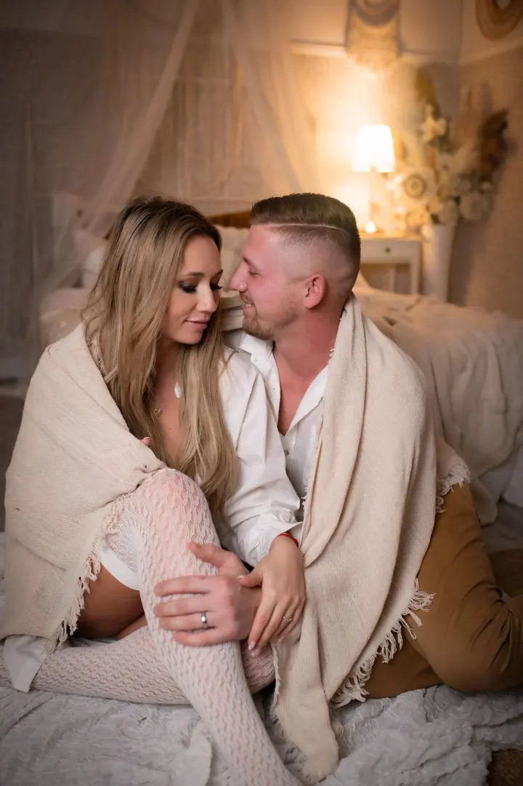
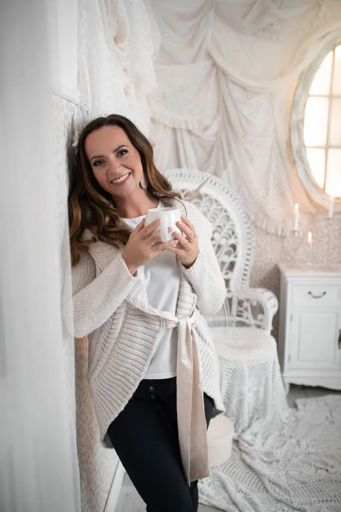
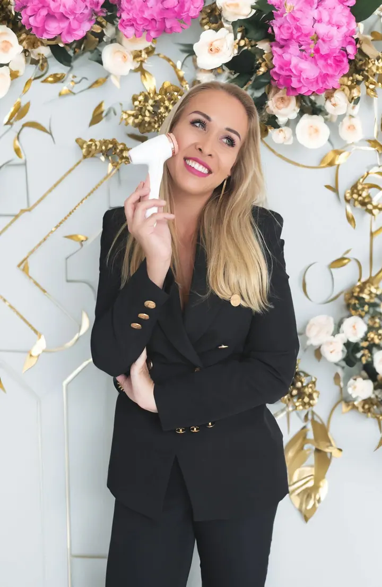

Rodinné a dětské focení
Rodinné a dětské focení v útulném studiu nebo v exteriéru. K tomu narozeninové focení s dortem i bez něj a tematická mini focení na Velikonoce a Vánoce.

Jmenuji se Aneta Jičínská a jsem rodinná, těhotenská a svatební fotografka z Pardubic. Mám vlastní fotostudio, kde se cítíte jako doma, a miluji krásné světlo a lidi, kt…
Rezervovat termínPředevším jsem máma dvou dětí a manželka. Když se nám narodilo první miminko, objevila jsem v sobě silnou touhu zvěčnit každou chvilku jeho života. Z té touhy se postupně stalo moje povolání a splnila jsem si sen stát se profesionální fotografkou.


Focení pro mě není jen o technice. Je o emocích, o lásce a o spojení mezi lidmi. Věřím, že každý člověk je jedinečný a zaslouží si být zachycen v tom nejlepším světle. Proto se pořád vzdělávám a jezdím na školení a kurzy.
V Pardubicích mám fotostudio, které jsem vybavila s láskou a péčí, abyste se v něm cítili příjemně a uvolněně. Kromě focení tu vedu i kurzy těhotenské a novorozenecké fotografie a studio si můžete také pronajmout.
Co fotím
Rodinné a dětské focení v útulném studiu nebo v exteriéru. K tomu narozeninové focení s dortem i bez něj a tematická mini focení na Velikonoce a Vánoce.
Ženský portrét ve studiu, kde se cítíte jako doma. Pro chvíle, kdy se chcete vidět v tom nejlepším světle.
Těhotenské focení ve studiu nebo venku. Bříško, něha a očekávání, ke kterým se budete rádi vracet.
Doprovodím vás vaším svatebním dnem a zachytím emoce, lásku a blízkost mezi lidmi, na kterých vám záleží.
Postup
Napište mi přes formulář nebo zavolejte a dejte vědět, o jaké focení máte zájem. Ozvu se vám co nejdříve zpět.
Vybereme termín a místo, tedy moje studio nebo exteriér, a probereme, jak si focení představujete.
Užijeme si focení v klidu a bez spěchu. Postarám se o to, abyste se cítili dobře a mohli být sami sebou.
Pečlivě vyberu a upravím nejlepší snímky a pošlu vám je, ať vám připomínají chvíle, na kterých vám záleží.
Otázky
Obojí. Rodinné, dětské, těhotenské i párové focení nabízím ve svém studiu v Pardubicích i v exteriéru, třeba při západu slunce.
Nejlépe už v těhotenství. Napište mi předpokládaný termín porodu a místo pro vás podržím.
Ano, nabízím dárkové poukazy na focení i na školení.
Ano, vedu kurz těhotenské a kurz novorozenecké fotografie. Stačí mi napsat, že máte o kurz zájem.